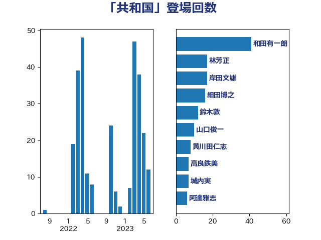

単語「共和国」

| 和田有一朗 | 日本維新の会 | 41 回 |
| 林芳正 | 自由民主党 | 17 回 |
| 岸田文雄 | 自由民主党 | 17 回 |
| 細田博之 | 自由民主党 | 16 回 |
| 鈴木敦 | 国民民主党 | 12 回 |
| 山口俊一 | 自由民主党 | 10 回 |
| 黄川田仁志 | 自由民主党 | 8 回 |
| 高良鉄美 | 無所属 | 7 回 |
| 城内実 | 自由民主党 | 7 回 |
| 阿達雅志 | 自由民主党 | 6 回 |
| 尾辻秀久 | 無所属 | 6 回 |
| 羽田次郎 | 立憲民主党 | 5 回 |
| 松原仁 | 立憲民主党 | 5 回 |
| 吉良州司 | 無所属 | 5 回 |
| 馬場成志 | 自由民主党 | 4 回 |
| 緒方林太郎 | 無所属 | 4 回 |
| 東徹 | 日本維新の会 | 4 回 |
| 穀田恵二 | 日本共産党 | 3 回 |
| 福岡資麿 | 自由民主党 | 3 回 |
| 礒崎哲史 | 国民民主党 | 3 回 |
| 吉田宣弘 | 公明党 | 3 回 |
| 北側一雄 | 公明党 | 3 回 |
| 加藤勝信 | 自由民主党 | 3 回 |
| 野田佳彦 | 立憲民主党 | 2 回 |
| 石原正敬 | 自由民主党 | 2 回 |
| 石井準一 | 自由民主党 | 2 回 |
| 田村智子 | 日本共産党 | 2 回 |
| 浜田聡 | NHK党 | 2 回 |
| 末松信介 | 自由民主党 | 2 回 |
| 小島敏文 | 自由民主党 | 2 回 |
| 奥野総一郎 | 立憲民主党 | 2 回 |
| 青山大人 | 立憲民主党 | 1 回 |
| 阿部弘樹 | 日本維新の会 | 1 回 |
| 長友慎治 | 国民民主党 | 1 回 |
| 鈴木貴子 | 自由民主党 | 1 回 |
| 鈴木宗男 | 日本維新の会 | 1 回 |
| 西村康稔 | 自由民主党 | 1 回 |
| 福島伸享 | 無所属 | 1 回 |
| 石川大我 | 立憲民主党 | 1 回 |
| 源馬謙太郎 | 立憲民主党 | 1 回 |
| 浜田靖一 | 自由民主党 | 1 回 |
| 斎藤アレックス | 国民民主党 | 1 回 |
| 徳永久志 | 無所属 | 1 回 |
| 川田龍平 | 立憲民主党 | 1 回 |
| 尾身朝子 | 自由民主党 | 1 回 |
| 小田原潔 | 自由民主党 | 1 回 |
| 太栄志 | 立憲民主党 | 1 回 |
| 古川禎久 | 自由民主党 | 1 回 |
| 伊藤信太郎 | 自由民主党 | 1 回 |